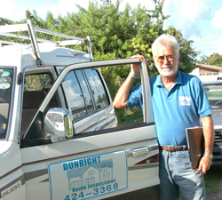

Welcome to Dunright Home & Building Inspections
the first licensed home and building inspection company in The Bahamas. We are based in New Providence (Nassau) but are also available to do inspections throughout all the many islands and cays of The Bahamas.
What is a home inspection?
A home inspection, or home survey, is a thorough and systematic professional evaluation of the condition of a property and its structures. It is a complete physical exam of the general integrity of a home or building and its various components; structural, mechanical, electrical and plumbing.
Our mission
Dunright Home & Building Inspections strives to provide our clients with the highest quality of service possible. Our only agenda is to present an unbiased, honest, thorough assessment of the property’s condition. We report our findings in a customized, detailed, illustrated report to assist buyers in making an informed decision about their real estate purchase. Dunright takes pride in abiding by the highest standards of technical and ethical performance set forth in The Standards of Practice and Code of Ethics of The American Society of Home Inspectors (ASHI).
Should you be in the market for a new home in The Bahamas or are considering selling the home you have, we urge you to contact us or request a home inspection from your BREA agent. We would be glad to answer any questions you might have or provide a quote. Dunright Home & Building Inspections looks forward to the opportunity to be of assistance in your real estate transaction.
Our inspection report
The Dunright Final Inspection Report is no mere checklist. It is a customized, detailed, room by room assessment of a home or commercial building, including the interior, exterior, any common areas and additional structures on the property.
- The report is delivered within 72 hours to give you vital information about your prospective purchase in a timely manner to assist in your real estate transaction.
- Data and digital photos provide clear documentation of the inspector’s findings.
- Over 600 items are evaluated and reported on in a computer generated factual document for easy reference.
- We provide suggestions or recommendations of repairs, replacement, further review or maintenance required.
- The report can be e-mailed for your convenience or we can provide a hard copy if you prefer.
About the Inspector
The inspector, Jacques Christofilis, a Bahamian born and bred, has over 25 years experience, primarily in the United States, in the gamut of construction and residential building trades, as well as industrial and mechanical plant maintenance.
He received his training and certification with Sherlock Home Inspections and American Building Inspections in Southern California. He personally inspected hundreds of homes of all sizes, styles and asking prices for the top real estate companies in the Los Angeles area, ultimately opting to open his own inspection company.
He returned home and relocated his business to Nassau in 2002 with the goal of raising the bar, so to speak, in the real estate field by providing this much-needed service and sharing his extensive knowledge and experience with the home-buying public of The Bahamas.
Inspection Services
Pre-purchase Inspections are the most common type of inspection and by far the most vital. For most people, buying a home is the largest investment of their life. As with any investment, there is a need for thorough evaluation and analysis before the final commitment. To roll the dice on the purchase of a home without a building inspectior’s evaluation of the property is gambling, not investing. Almost all buildings have defects and the excitement of owning a home can quickly diminish with unpleasant costly surprises after moving in. A professional home inspection is the best way to gain a thorough knowledge of the actual condition your prospective purchase enabling you to make a wise decision.
Pre-listing Inspections provide sellers with a distinct advantage. They demonstrate you, as the seller, have nothing to hide, establishing trust among all parties and increasing the liklihood of a fast sale. If defects are uncovered, the inspection report provides the seller the option of repairing or replacing the item prior to listing their home, greatly increasing the desirability of the property and reducing negotiations on the asking price.
New Construction Stage Inspections are performed at various key points throughout the building process. The construction of a new house with all its many components and systems is complex and with even the most reputable of builders, mistakes happen. Independent stage inspections provide an extra degree of checks and balances to assure every detail of your new home is perfect, providing you with peace of mind.
Commercial Inspections include properties such as apartment complexes, motels, office buildings, retail stores and warehouses. The inspection evaluates all the major systems of the property as well as its structural components.
Home Maintenance Inspections are a good idea for homeowners to get about every five years. This type of inspection helps identify problems and damage in the home before they become an expensive or irreversible threat to fiscal or physical well-being.
Repair Quality Control Inspections are offered to assist homeowners in establishing the highest standards of construction and repairs when they have contracted work to be done on their home, be it structural, electrical, plumbing, roofing, etc. Having a third-party expert check the work in progress and after completion guarantees the repairs will be performed to industry standards.
Real Estate Professionals: As a REALTOR, your relationship with your clients is one based on trust in your expertise and reliance on your service. A home inspection is one of the best ways to help your clients feel confident at that moment of truth during their decision to buy. It is also a great way for your clients interested in selling their home to get their property in optimal condition for a fast sale. Every person involved in the real estate transaction benefits from a professional home inspection.
When you refer a client to Dunright Home & Building Inspections, you get someone who will represent your client’s best interests and protect your valuable reputation. Satisfied buyers and sellers become repeat customers and a great referral source.
Dunright is sensitive to the nature of the real estate transaction and present our findings in an appropriate manner so as not to jeopardize the sale. We pledge our very best service every time and deliver the finest inspection report in the industry.
What We Do
The following is a list of some of the systems and components that are inspected and reported on during the course of an inspection. These items are examined for material defects that would significantly affect the value, desirability or safety of the home.
Structure and foundation:
including foundations and support components, structural integrity, ventilation, crawlspaces, surface grade to foundation, drainage.
Building exteriors:
including doors and windows, exterior wall finishes, attached decks, balconies, porches, patios, railings, walkways, driveways.
Roof:
including roof covering and condition, flashing, vents, skylights, gutters and downspouts.
Attic areas and roof framing:
including framing, sheathing, hatches, insulation, ventilation, evidence of leaking, hurricane anchoring clips.
Plumbing systems:
including plumbing fixtures, faucets and drains, water heaters, functional flow and water supply, gas tank installation safety, waste system.
Electrical systems:
including service conductors, equipment and capacity, main and sub-panels and over-current protection devices, grounding wiring, switches, receptacles and light fixtures and electrical shock safety hazards.
Central cooling systems:
including cooling equipment, distribution systems, energy sources, connections and condensation drainage.
Building interiors:including walls, ceilings and floors, security bars, ventilation, doors, windows and screens, stairs and railings, closets, cabinets, countertops, laundry provisions, smoke detector placement, built-in appliances such as stove, oven, heat vent etc.
Garages:
garage door, safety springs, hardware, firewall and fire door if applicable, other fire and child safety protective devices.
Pools and Spas:
overall condition, motor, pump installation, electrical shock safety.
Safety:
I pay special attention to safety items, including fire hazards, health hazards, electrical shock and potential child safety issues. I crawl into attic spaces and climb up on the roof whenever possible, where most homeowners do not venture. Where I identify termite damage, water deterioration, asbestos-type material or possible roof leaks which are beyond the scope of the inspection, I recommend when necessary, further review by an appropriate expert to determine the course of action.
Frequently Asked Questions
This list of frequently asked questions and answers can provide you with information on the home inspection process and its benefits. If your question is not covered here, please contact us at Dunright Home & Building Inspections for more detailed information.
What is a home inspection?
A home inspection is an objective, visual examination of the physical structure and systems of a home from the roof to the foundation.
What does an inspection include?
The report will review the condition of the home’s central air conditioning system, interior plumbing, electrical system, the roof, attic and visible insulation,walls, ceilings, floors, windows and doors, built-in appliances, the foundation and visible structures on the property.
Why do I need an inspection?
The purchase of a home is probably the largest single investment you will ever make. You should learn as much as you can about the condition of the property and the need for any major repairs before you buy, to minimize unpleasant surprises and difficulties afterwards. It will also point out the positive maintenance necessary to keep it in good shape. The inspection report will give you a much clearer understanding of the property you are about to purchase. If you are considering selling your home, an inspection prior to listing will enable you to make repairs that will put the house in a better selling condition. If you already are a homeowner, a home inspection can identify problems in the making and suggest preventive measures that might help you avoid costly future repairs.
Can’t I do it myself or have my brother-in-law, the contractor check it out?
Even the most experienced homeowner lacks the knowledge and expertise of a trained inspector who has inspected hundreds of homes in his career. Home Inspection is a unique discipline separate from mere knowledge of construction. A trained inspector is familiar with all the elements of home construction, their proper installation and maintenance. He also understands how the home’s systems and components are intended to function and why they fail. Above all, most buyers find it difficult to remain objective about the house they really want and this can affect their judgement. For the most accurate information, it is best to obtain an impartial third-party opinion by a qualified expert in the field.
Can a house fail an inspection?
No. A professional home inspection is an examination of the current condition of a home. It is not an appraisal, which determines market value, nor a government inspection to verify code compliance. A home inspector, therefore, will not pass or fail a house but rather describe its physical condition and indicate what may need repair or replacement.
Do I have to be there during the inspection?
It is not necessary for you to be present for the inspection but it is recommended. You will be able to observe the inspector and ask questions directly that you might have about the property. You will also find the written report easier to understand if you’ve seen the home first hand through the inspector’s eyes.
What if the report reveals problems?
No house is perfect. If the inspector identifies problems, it does not mean you should not buy the home, only that you will know in advance what to expect. The seller may make the necessary repairs or adjust the purchase price accordingly if there are major deficiencies. Or if you choose not to become involved in future repair work then this information prior to closing will be extremely helpful to you in that decision. It is a useful tool for you, your agent and the seller too to take into negotiations.
What if the home is sold “as is”?
This may be the best of all reasons to get an inspection! As the seller your home will likely sell quickly for the highest price when every condition is disclosed. When you are purchasing a home "as is", it is very important to be aware of exactly what "as is" entails. A written assessment by an unbiased expert will identify any problems, apparent minor defects as well as more major or hidden deficiencies. Then all parties in the real estate transaction are on the same page with no uncertainty or surprises. A home inspection gives buyers the knowledge to proceed with confidence. A good REALTOR with the best interests of his client in mind will always recommend a home inspection.
If I am buying a brand new home or having my home custom built, should I still get it inspected?
Absolutely. Newly constructed homes often seem to have more problems than a lived in home just because no one has lived there yet to find them and fix them! Also even the most reputable of contractors must rely on their workmen and can overlook a detail or a potentially serious problem with the complexity of building a home or multi-unit complex. Human error, tight time schedules and cost constraints add to the equation. Save yourself the aggravation and sleepless nights by having the safety net provided with a home inspection. If you are having your home custom-built, Dunright does New Construction Stage Inspections to ensure the highest quality control at each step of the building process and sets the tone to your builder that you expect every detail from foundation to roof to be done right.
How long does an inspection take?
A typical inspection of a 3-bedroom, 2-bath home or condominium takes approximately three to three and a half hours. Larger estates and certain properties in need of significant maintenance can take longer. The age of the property is also a determining factor.
What do I get in writing?
Our 600+ inspection findings are packaged in an attractive, easy-to-understand, state-of-the-art report detailed room by room. We use digital photography to help clarify inaccessible or problematic areas and we suggest repairs, replacement or maintenance necessary to remedy a defect or bring it up to standard.
What will it cost?
The inspection fee for a typical one-family house varies geographically, as does the cost of housing. Similarly, within a given area, the inspection fee may vary depending on a number of factors such as the square footage, number of bedrooms and baths, age of the home and/or any additional structures on the property. Inspection fees start at $300 for a 2-bedroom, 1-bath home or condominium. Please call us for a quote.
However, financial experts advise not to let cost be a factor in deciding whether or not to have a home inspection. The sense of security and knowledge gained from an inspection is well worth the cost every time and purchasing a home without getting an inspection first is simply gambling.
What is ASHI?
ASHI, or the American Society of Home Inspectors has worked to build consumer awareness of home inspection and to enhance the professionalism of its membership since 1976. The ASHI Standards of Practice and Code of Ethics serves as a performance guideline for home inspectors, and is universally recognized and accepted by many professional and governmental bodies. ASHI is an organization of independent, professional home inspectors within the United States who make a commitment to conduct inspections in accordance with the ASHI Standards of Practice and Code of Ethics.
Although ASHI does not recognize any inspection company outside U.S. borders nor accept foreign-based inspectors into their organization, having received my training, certification and experience in the U.S., I am proud to honour and abide by these same Standards of Practice and Code of Ethics.
DISCLAIMER:
THE INSPECTION REPORT DOES NOT CONSTITUTE A WARRANTY, AN INSURANCE POLICY OR A GUARANTEE OF ANY KIND. THE INSPECTION REPORT REFLECTS AN OBSERVATION OF CERTAIN LISTED ITEMS OF THE PROPERTY AS OF THE DATE AND TIME OF THE INSPECTION AND IS NOT A LISTING OF REPAIRS TO BE MADE. THE INSPECTION REPORT IS NOT INTENDED FOR USE AS A GUIDE IN RE NEGOTIATING THE SALES PRICE OF THE PROPERTY NOR SHOULD IT BE CONSTRUED AS AN OPINION OF THE VALUE OF THE PROPERTY. THE SELLER MAY OR MAY NOT BE REQUIRED TO REPAIR DEFICIENCIES REFLECTED IN THIS INSPECTION REPORT AND THAT DETERMINATION' SHOULD BE MADE BY YOU (THE BUYER), THE SELLER, YOUR REAL ESTATE AGENT(S) AND YOUR ATTORNEYS. WE RECOMMEND THAT YOU ATTEND THE ACTUAL INSPECTION. (c) 2021 Dunright Home Inspections
Testimonials
We consistently use Jacques Christofilis of Dunright Home & Building Inspections, for home inspections in The Commonwealth of the Bahamas. It was therefore natural that I recommended Jacques Christofilis to my customer ‘JJ’ who was looking at one of our houses. This is what ‘JJ’ had to say about his experience with Christofilis and Dunright:
“I had noticed some moisture damage in the house during our first showing. We liked the house but I needed to know how bad the home’s condition was and how much TLC was needed. Jacques Christofilis met me on-site and we spent the next few hours going over the home. The property was a townhouse and to my relief the common areas were also inspected, as this impacts the overall value of the property. J. Christofilis was very meticulous and systematically inspected every door, window, wall, ceiling, etc of the home; every faucet tap was turned and every light switch flipped, every door and window was opened and closed. Anything that was reasonably accessible was inspected. For each defect encountered, Mr. Jacques Christofilis explained the extent of the problem, and the short term/long term impact it would have on the property. The disrepair and lack of maintenance of the house was worse than we had expected but Jacques Christofilis’ many years of experience in building inspections, general construction and repair became apparent in that in many cases Jacques could suggest repair methods and could give rough “guestimates” of repair prices.
Shortly after the onsite inspection I had the report in my email; the report was clearly organized with an itemized description and findings for each part of every room. For each fault or problem the report referenced digital photos which were conveniently placed below the description to clearly illustrate the finding. The report was professionally presented, and most importantly gave me a rough idea at the end of the overall estimated cost to bring this property up to a reasonable standard. As I placed my bid on the property is was important to know if the TLC needed was going to be $10,000 or $200,000! The Dunright report helped me make good due diligence and an appropriate offer. On top of everything Jacques Christofilis has a nice personality and it was a pleasure spending several hours with him inspecting the property. I can warmly recommend Jacques Chrsitofilis and Dunright Home Inspections to anyone considering buying a house in The Bahamas.”
‘JJ’, Nassau 2007.
This is why I will keep recommending Jacques Christofilis and Dunright home inspections to our clients.
Mark Hussey, Damianos Sotheby’s International Realty
Dear Mr. Christofilis,
I wanted to thank you for the prompt, concise and thorough inspection you performed on the Harmony Hill home my wife and I were interested in purchasing.
Though we did not purchase the home, your report gave to us a full spectrum of the assets and liabilities of the property which then allowed us to make a risk free assessment towards our investment.
As we continue to search for that “perfect” property we feel confidant, utilizing your service, that we will have all the information that is required to make the correct decision on our future home.
Sincerely,
Mark J. Piekarz
Dear Sirs,
I am happy to recommend to your institution the services of Jacques Christofilis who has done several home and commercial building inspections on our behalf.
We have been extremely satisfied with Mr. Christofilis' reports and have recommended his services to numerous persons who required building inspections. The reports are very thorough and go into all details.
I have no hesitation in recommending Mr. Christofilis' services. Should you have any questions please contact me.
Yours Truly,
C.M. Lightbourn
President
Coldwell Banker/Lightbourn Realty
Thanks Jacques,
First class report which gives me plenty of info on technical areas which I simply don't have the knowledge of myself.
I was highly satisfied with your level of service and professionalism and will not hesitate to recommend you to friends and colleagues alike.
I'm amazed more people don't use your service. What sort of person buys a home without getting it inspected?!
Best regards,
Andrew Davies
Monday, June 26, 2006